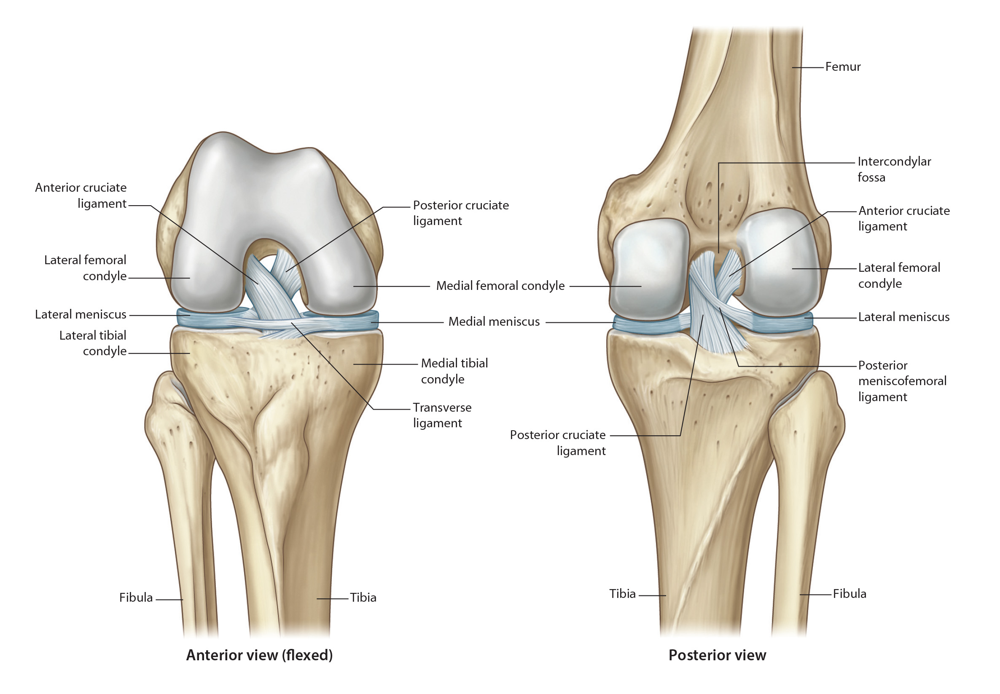

Lab 8 - Module 1 - Anatomy of the Knee: Page 7 of 10
×

Ligaments Not Reinforcing the Capsule
|  |
| Tap on image to enlarge |
| The Cruciate Ligaments are enclosed within the articular capsule. They are called cruciate due to their crossing within the joint. With the crossing, they are able to wrap around one another in a "coaption" of the joint. This coaption of the joint occurs with internal rotation of the tibia on the femur, while external rotation separates the two ligaments. |
| The Cartilage of the knee joint is termed "Menisci" (meniscus for singular). There are two menisci within the knee joint and both are enclosed within the articular capsule. |
| Add the Lateral Meniscus is more closed and resembles an "O". |
| Add the Medial Meniscus is more open and resembles a "C". |
| Cephlad view of the menisci with the femur removed. This view allows you to see the shape of the menisci and the cruciate ligaments. |
| Both menisci are nourished by the coronary ligaments which attach each meniscus to the respective tibial plateau. These ligaments are known as the Menisoc-Tibial Ligaments. The medial meniscus is attached to the deep layer of the MCL and to the semimembranosis tendon. The lateral meniscus is not attached to any external ligaments or tendons but has two ligaments attaching its posterior horn to the femur. These ligaments are menisco-femoral ligaments and specifically called: The Anterior Menisco-Femoral ligament (the ligament of Humphrey's) and the Posterior Menisco-Femoral ligament (the ligament of Wrisberg). These two ligaments are named for their relationship to the posterior cruciate ligament and one of the two ligaments is often absent. The synovial capsule of the knee joint is quite elaborate. It is, for the most part, enclosed within the articular capsule, yet it does not enclose the menisci. The cruciate ligaments are covered on all sides by the synovial membrane. |